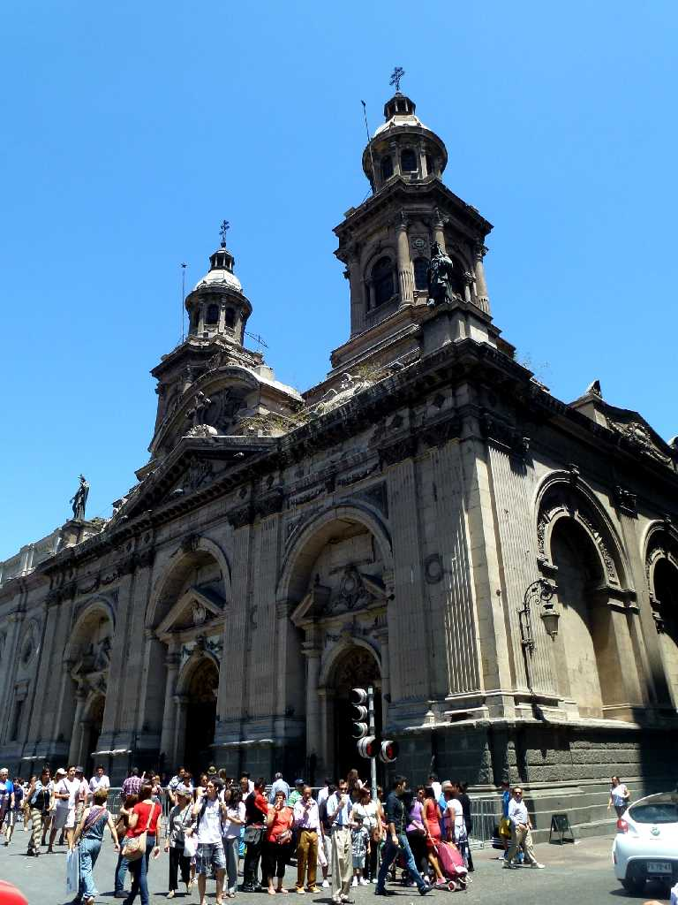
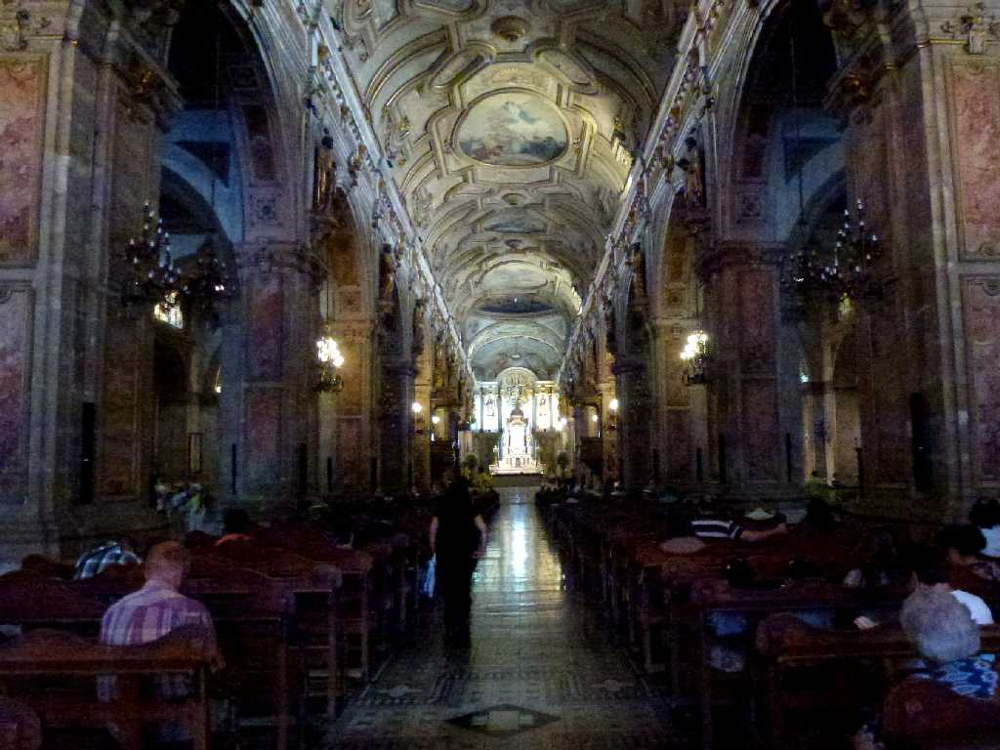
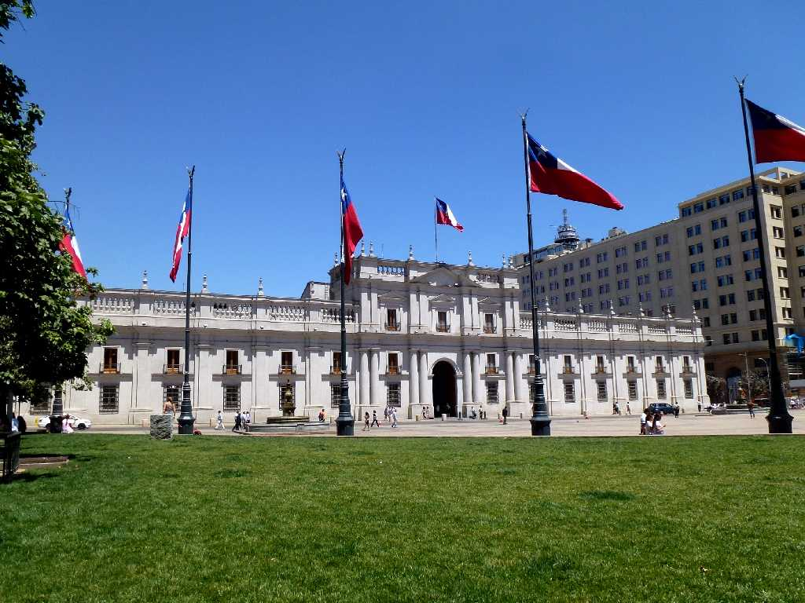
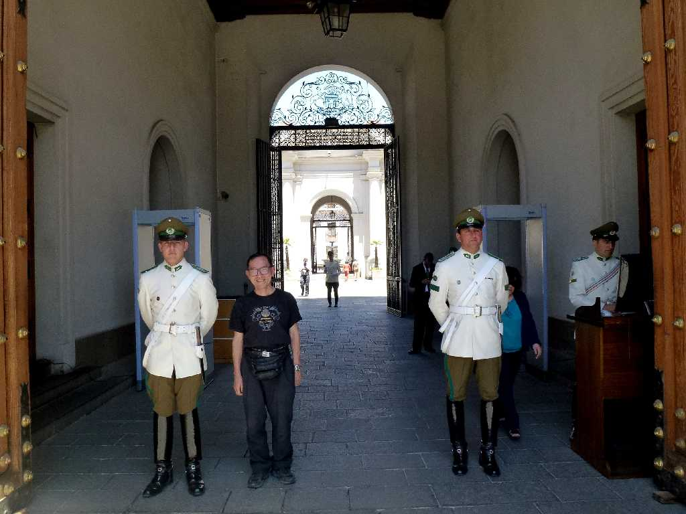
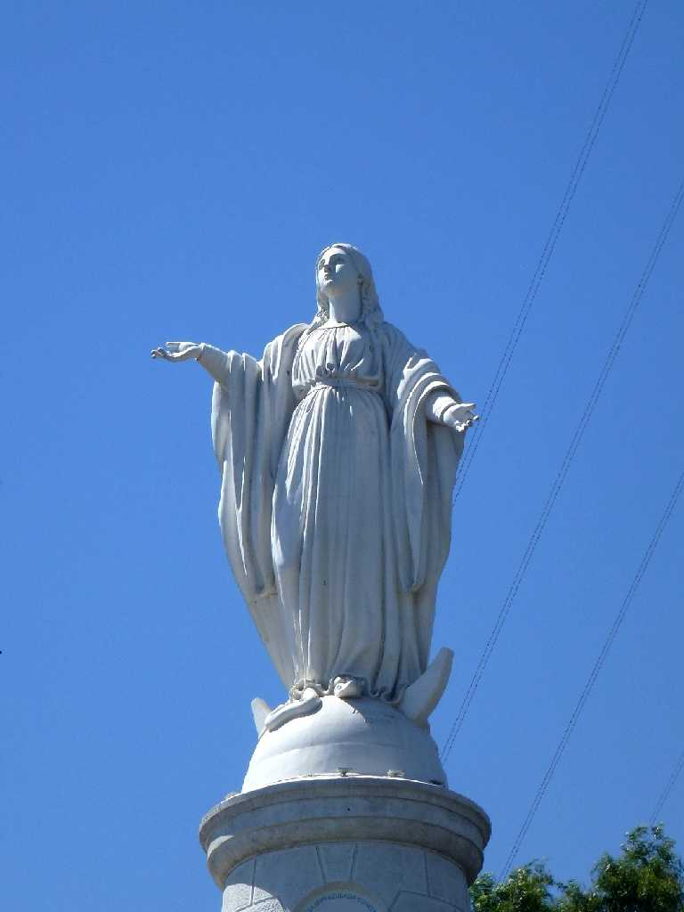

Catedral Metropolitana de Santiago Santiago
チリの首都サンチャゴ旧市街の中心地アルマス広場に面したメトロポリタン大聖堂

Catedral Metropolitana de Santiago
パタゴニア縦断５,０００ｋｍバスの旅はここサンチャゴを出発し南端のウシュアイアに向かって走る

Palacio de La Moneda

February 4 2014 Palacio de La Moneda

Virgin Statue Cerro San Cristobal